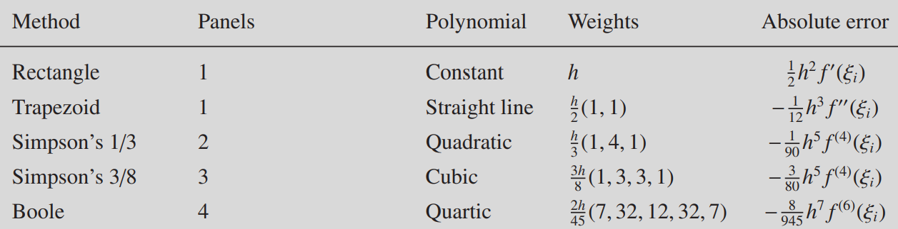

Newton–Cotes Methods
Newton–Cotes methods evaluate the integral as a sum of elementary areas (rectangles, trapezoids, etc.). We use Newton–Cotes methods that employ an equally spaced grid. The assumption is that we have access to a set of n discrete data points (i.e., a table) of the form (x_i, f(x_i)) for i = 0, 1,\dots, n-1. The points x_i are on an equally spaced grid, from a to b. The n points then are given by the following relation:
x_i = a + ih, \quad h = \frac{b-a}{n-1}.
Recall that we are dealing with n points in total, so we are faced with n- 1 subintervals from a to b. It would be nice to introduce a new variable N=n-1, which is the number of intervals (also called panels). Then for x_i, i = 0,\dots, N and we have in total n = N+1 points.
In the following, all methods will be constructed based on
\int_a^b f(x)dx = \sum_{i=0}^N\int_{x_i}^{x_{i+1}} f(x) dx,
and perform approximations to the “small problem”
\int_{x_i}^{x_{i+1}} f(x) dx.
Rectangle Rule
The rectangle rule makes the simplest assumption possible, namely that the area under f(x) from x_i to x_{i+1} can be approximated by the area of a rectangle, with width h (the distance from x_i to x_{i+1}) and height given by the value of f(x) either at x_i or at x_{i+1}. Analytically, this is
\int_{x_i}^{x_{i+1}} f(x) dx\simeq hf(x_i).
This is illustrated in Figure 2 for n=5 (N=4).
In fact, this should be referred to as the left-handed rectangle rule. We would just as easily have take the height of the rectangle as the value of f(x) at the right abscissa, f(x_{i+1}), giving rise to the right-hand rectangle rule.
With this, we have
\int_a^b f(x) dx\simeq h f(x_0) + h f(x_1) + \cdots + hf(x_{n-2}).
Using the language of weights c_i for \int_a^b f(x) dx \simeq \sum_i c_i f(x_i), these weights are all h except at the endpoint x_{n-1} (point b).
Error Analysis
To do an error analysis, let us perform a Taylor expansion
f(x) = f(x_i) + (x - x_i) f'(x_i) + \cdots
= f(x_i) + (x - x_i) f'(\xi_i),
where \xi_i is a point between x and x_i. With this, we can write the integration as
\int_{x_i}^{x_{i+1}} f(x) dx
= \int_{x_i}^{x_{i+1}} dx\,[f(x_i) + (x - x_i) f'(\xi_i)],
where the first term is the same as in the “rectangle-rule” approximation, and the second term is the error.
To evaluate the error term, we introduce
u = \frac{x - x_i}{h}.
Expressed in terms of u, the above integral can be rewritten as
\int_{x_i}^{x_{i+1}} f(x) dx =
h \int_0^1 du [f(x_i) + hu f'(\xi_i)] = hf(x_i) + \frac{1}{2}h^2 f'(\xi_i).
We find that the absolute error in the one-panel rectangle formula is
\mathcal{E}_i = \frac{1}{2} h^2 f'(\xi_i)
The total absolute error is then given by
\begin{align*}
\mathcal{E} &= \sum_{i=0}^{n-2} \mathcal{E}_i
= \frac{1}{2}h^2\sum_{i=0}^{n-2} f'(\xi_i) \\
& = \frac{n-1}{2}h^2 \bar{f'} \\
& = \frac{b-a}{2}h \bar{f'}
\end{align*}
where
\bar{f'} = \frac{1}{n-1}\sum_{i=0}^{n-2} f'(\xi_i)
is the mean value of f'. In the third line, we have used (n-1)h = b-a. Thus, we see the leading error is O(h).
Midpoint Rule
The one-panel version of the midpoint rule is
\int_{x_i}^{x_{i+1}} f(x) dx \simeq h f(x_i + \frac{h}{2}).
In fact, the midpoint rule is an open method, namely the two endpoints are not included. In your homework, you will perform an error analysis for this method.
Integration from Interpolation
We now briefly turn to an improved rule, which is surprisingly similar to the rectangle rule. We start with the one-panel version.
Notice that in both the rectangle rule and midpoint rule, we approximate f(x) as a constant between x_i and x_{i+1}, namely, just a horizontal line between x_i and x_{i+1}.
The natural next step is to assume that the function is not approximated by a constant, i.e., a horizontal line, from x_i to x_{i+1}, but by a straight line, a quadratic, a cubic, and so on. This is actually the problem of interpolation, which will be explained in the following.
It should be straightforward to see that one panel, made up of two consecutive abscissas, is enough to define a general straight line (i.e., not necessarily a flat, horizontal line). Similarly, two panels, made up of three consecutive abscissas, can “anchor” a quadratic, and so on.
In general, we have as input a table of q data points (x_{i+j}, f(x_{i+j})) for j=0, 1,\dots, q - 1 and wish to find the interpolating polynomial that goes through them. For q = 2 we get a straight line, for q = 3 a quadratic, and so on. We shall use the notation: q = 3 leads to the three abscissas x_i, x_{i+1}, and x_{i+2}.
Thus, for a given approach the elementary interval will depend on the value of q: for q = 2 the elementary interval has a width of one panel, for q = 3 of two panels, for q = 4 of three panels, and so on. More generally, for the case of q points in the elementary interval we wish to approximate the integral:
\int_{x_i}^{x_{i+q-1}} f(x) dx.
The way we do this in general is to employ an interpolating polynomial p(x).
Lagrange Interpolation
Lagrange interpolation is a method to introduce a polynomial p(x) that passes a given set of points. We shall introduce a few related concepts in the following.
Cardinal Polynomials
We have a table of data points (x_j, y_j) for j = 0, 1, \dots, q-1. Before discussing how to interpolate through those points, let us introduce what are known as cardinal or Lagrange or fundamental polynomials:
L_k(x) = \frac{\prod_{j=0,j\neq k}^{q-1} (x - x_j)}{\prod_{j=0,j\neq k}^{q-1} (x_k - x_j)}.
The denominator depends only on the x_j’s, on the interpolation points. So it is a constant. the numerator is a polynomial in x of degree n-1, which for a given k goes to 0 at x_j when j \neq k. The Lagrange polynomial L_k(x) goes to 1 at x_k, since the numerator and the denominator are equal to each other in that case.
If you’ve never encountered Lagrange polynomials before, you might benefit from seeing them explicitly written out for a simple case. Regardless of where the x_j’s are placed, here’s what the three Lagrange polynomials for the case of q=3 look like:
L_0(x) = \frac{(x - x_1)(x - x_2)}{(x_0 - x_1)(x_0 - x_2)}, \quad L_1(x) = \frac{(x - x_0)(x - x_2)}{(x_1 - x_0)(x_1 - x_2)}, \quad L_2(x) = \frac{(x - x_0)(x - x_1)}{(x_2 - x_0)(x_2 - x_1)}.
They have the properties, for example, L_0(x_1) = 0, L_0(x_2) = 0, and L_0(x_0) = 1.
In general, we have
L_k(x_j) = \delta_{kj}.
We can use these cardinal polynomials as basis functions:
p(x) = \sum_{k=0}^{q-1}y_k L_k(x).
One can verify that when we insert x = x_j, we have
p(x=x_j) = \sum_{k=0}^{n-1} y_k \delta_{kj} = y_j
, as expected!
Integration
Let us now come back to integrations. The elementary interval for the integration will depend on the value of q: for q=2, this has a width of one panel; for q=3 of two panels, for q=4 of three panels and so on. We will work with the following integral
\int_{x_i}^{x_{i+q-1}} f(x) dx .
The way we do this in general is to employ an interpolating polynomial (so that we approximate f(x)\simeq p(x) in the elementary interval)
p(x) = \sum_{j=0}^{q-1} f(x_{i+j}) L_{i+j} (x).
Since our nodes go from x_j to x_{j+q-1}, the cardinal polynomials L_{i+j}(x) take the form:
L_{i+j}(x) = \frac{\prod_{k=0,k\neq j}^{q-1}(x - x_{i+k})}{\prod_{k=0,k\neq j}^{q-1}(x_{i+j} - x_{i+k})}.
For example, consider q=4, we have L_i(x), L_{i+1}(x), L_{i+2}(x) and L_{i+3}(x), each of which is a cubic polynomial. The points they are interpolating over are x_i, x_{i+1}, x_{i+2}, and x_{i+3}.
Newton–Cotes methods in an elementary interval are cast as:
\begin{align*}
\int_{x_i}^{x_{i+q-1}} f(x) dx &\simeq \int_{x_i}^{x_{i+q-1}} p(x) dx \\
&= \sum_{j=0}^{q-1}\left(f(x_{i+j}) \int_{x_i}^{x_{i+q-1}} L_{i+j}(x)dx\right) \\
&= \sum_{j=0}^{q-1}w_{i+j} f(x_{i+j}),
\end{align*}
here we introduced the weights for the elementary interval:
w_{i+j} = \int_{x_i}^{x_{i+q-1}} L_{i+j}(x) dx.
The crucial point is that these weights depend only on the cardinal polynomials, not on the function f(x) that is being integrated. Thus, for a given q, implying an elementary interval with a width of q−1 panels, these weights can be evaluated once and for all, and employed to integrate any function you wish, after the fact.
By focusing on an elementary interval and employing a low-degree polynomial in it, in essence what we’re doing is piecewise polynomial interpolation and then integration of each interpolant.
Trapezoid Rule
We consider the case q=2, giving rise to what is known as the trapezoid rule. We have the two points (x_i, f(x_i)) and (x_{i+1}, f(x_{i+1})), and the two cardinal polynomials are
L_i(x) = \frac{x - x_{i+1}}{x_i - x_{i+1}} = -\frac{x - x_{i+1}}{h},\quad L_{i+1}(x) = \frac{x - x_{i}}{x_{i+1} - x_{i}} = \frac{x - x_i}{h}.
This immediately gives the two elementary weights
\begin{gather*}
w_i = \int_{x_i}^{x_{i+1}} L_i(x) dx = -\frac{1}{h}\int_{x_i}^{x_{i+1}}(x - x_{i+1})dx = \frac{h}{2} \\
w_{i+1} = \int_{x_i}^{x_{i+1}} L_{i+1}(x) dx = \frac{1}{h}\int_{x_i}^{x_{i+1}}(x - x_{i})dx = \frac{h}{2} = w_i.
\end{gather*}
We see that the sum of weights for the elementary interval is equal to the width of the elementary interval.
We summarize the trapezoid rule below:
- One-panel version
\int_{x_i}^{x_{i+1}} f(x) dx \simeq \frac{h}{2} \left[f(x_i) + f(x_{i+1}) \right].
- Composite version
\int_a^b f(x)dx = \sum_{i=0}^{n-2} \int_{x_i}^{x_{i+1}} f(x)dx \simeq \frac{h}{2}f(x_0) + h[f(x_1)+\dots+f(x_{n-2})] + \frac{h}{2}f(x_{n-1}).
We can summarize the weights as c_i = h\{\frac{1}{2}, 1, \dots, 1, \frac{1}{2}\}. This is illustrated Figure 3.
Error analysis
Without giving a proof, the leading error for trapezoid rule is
\mathcal{E} = -\frac{b-a}{12}h^2\bar{f''},
where \bar{f''} is equal to the arithmetic mean of f''.
Simpson’s Rule
Simpson’s rule is the natural continuation of the Lagrange interpolation process we saw above for q=3, and we have three abscissas x_i, x_{i+1} and x_{i+2}. The trapezoid rule fig a straight line through two points, so Simpson’s rule fits a quadratic throught three points (making up two panels). The elementary interval here is of width 2h.
We are dealing with three points (x_i, f(x_i)), (x_{i+1}, f(x_{i+1})), and (x_{i+2}, f(x_{i+2})), and three cardinal polynomials
\begin{gather*}
L_i(x) = \frac{(x - x_{i+1})(x - x_{i+2})}{(x_i - x_{i+1})(x_{i} - x_{i+2})} \\
L_{i+1}(x) = \frac{(x - x_{i})(x - x_{i+2})}{(x_{i+1} - x_{i})(x_{i+1} - x_{i+2})} \\
L_{i+2}(x) = \frac{(x - x_{i})(x - x_{i+1})}{(x_{i+2} - x_{i})(x_{i+2} - x_{i+1})}.
\end{gather*}
Each of these is a quadratic polynomial. We would now like to compute the three elementary weights, which requires integration from x_i to x_{i+2}. It can be shown that (left as homework)
\begin{gather*}
w_i = \int_{x_i}^{x_{i+2}} L_i(x) dx = \frac{h}{3} \\
w_{i+1} = \int_{x_i}^{x_{i+2}} L_{i+1}(x) dx = \frac{4h}{3} \\
w_{i+2} = \int_{x_i}^{x_{i+2}} L_{i+2}(x) dx = \frac{h}{3}.
\end{gather*}
We can summarize the Simpson’s rule:
Two-panel version:
\int_{x_i}^{x_{i+2}} f(x) dx \simeq \frac{h}{3} [f(x_i) +4f(x_{i+1}) + f(x_{i+2})]
Composite version (requiring odd number of points n, or even number of pannels N):
\begin{align*}
\int_{a}^b f(x)dx & = \sum_{i = 0,2,4,\dots}^{n-3}\int_{x_i}^{x_{i+2}} f(x) dx \\
&\simeq \frac{h}{3} f(x_0) + \frac{4h}{3}f(x_1) + \frac{2h}{3}f(x_2) + \frac{4h}{3}f(x_3)+ \dots + \frac{2h}{3}f(x_{n-3}) +
\frac{4h}{3}f(x_{n-2}) + \frac{h}{3}f(x_{n-1}).
\end{align*}
We can summarize the weights as c_i = \frac{h}{3}\{1,4,2,4,\dots,2,4,1\}. This method is illustrated in the right of Figure 3.
Error analysis
We simply state the absolute error for Simpson’s rule:
\mathcal{E} = -\frac{b-a}{180}h^4\overline{f^{(4)}},
with the arithmetic mean \overline{f^{(4)}}.
Observe that this error contains a fourth derivative, so for polynomials of up to third degree, the composite Simpson’s rule is exact. This is surprising: we found that this method is exact for all cubic polynomials, even though we derived it using a quadratic polynomial!
Increasing order
By keep going in the order of polynomials, one can derive other rules. We summarize a few of these rules in the following. 